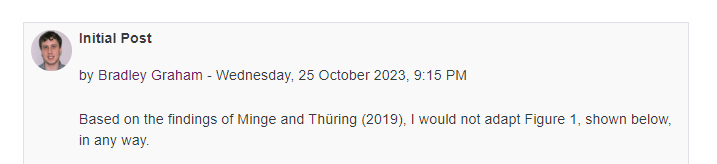
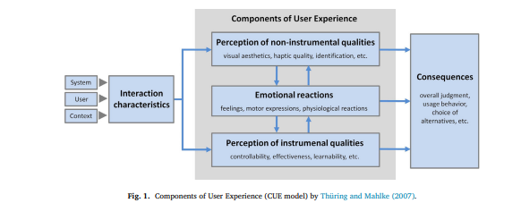
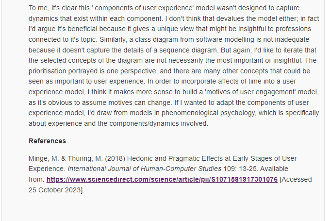

Week 5 & 6
Reading
The core reading of the week 5 revolved around user experience, while week 6 revolved around software testing. Both sets of reading seemed abit random, and not in a good way, when I compared their content to the expectation of content that I had about what should be included in this project management course. Of course that's me being, from my perspective; extremely critical. I've clearly developed my own personal construct on what constitues project management, and while I will provide points to back up my perspective; educational psychologists such as Kelly (1955) would point out that true learning requires having our views broken. Here's my construct:
User experience is an important aspect of sucessful software, and it's something a project manager could focus on. However in my professional experience, working for a large international software development company (Light & Wonder), UX is the focus of specialised teams whose job it is to ensure that software meets and surpasses market expectations. They do this by liasing with industry experts and enthusiasts. Project managers are not involved in that. Moreover, in businesses with Agile SDLC's, it's the role of architects and developers to build UX as directed by stakeholders. Traditionally, project managers are not involved in the topical discussions. The same holds for software testing too. In relation to a project manager, these processes should be modelled with respect to project constraints, fundamentally time, cost and stakeholders.
That being said, having access to a library of resources means I was still able to develop a more critical perspective on the matter, by evaluating papers with different perspective. One of the additional readings I particular liked was a paper by Shastri et al (2021) titled 'The role of the project manager in agile software development projects' which shared my sentiment on the role of project managers, building some self-confidence in my ideas, and critical reference. As a researcher, I do think it's valuable making ideas explicit because reflection in the context of differing perspectives yields new insights. For me that insight consisted of becoming aware of the possibility of modelling solutions to the problem of choosing which testing project strategy to use, as an optimisation problem.
Class Discussion
For a class discussion, we were tasked with reading Minge & Thuring's (2018) paper titled ' Hedonic and pragmatic halo effects at early stages of User Experience', available here. We were then asked to talk about whether we would change figure 1.
  Group Project
In week 5, we met as usual, this time making use an AI feature built into Zoom, the video conferencing software. The AI summarised our discussion at the end of the meeting. I found this extremely convenient, and was suprised at the depth of the summary. Here's that AI Summary. I explored some of the challenges with using AI for summarising meetings.
In week 6, we submitted the first marked assessmnet, our Project Plan